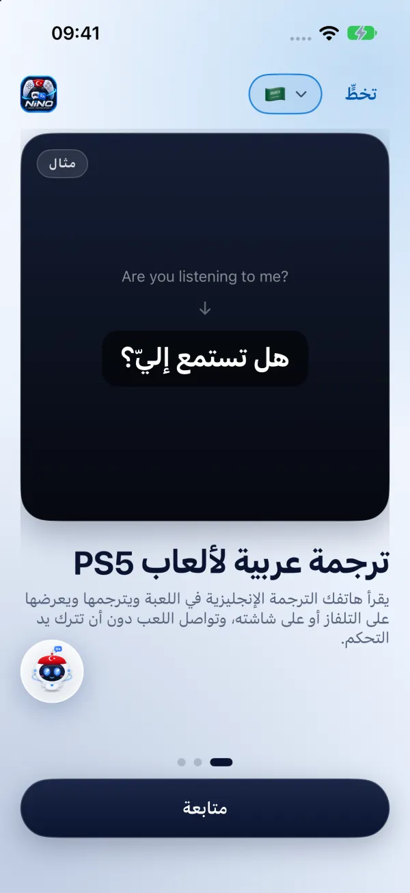
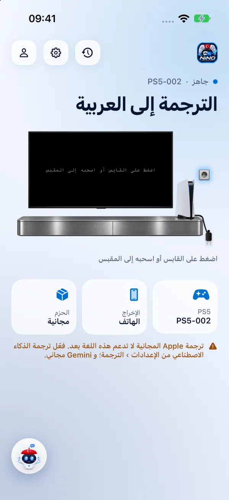

Nino Game Translator
اللعبة بالإنجليزية.
والترجمة بالعربية.
يقرأ Nino نصوص ألعاب PS5 و Xbox الإنجليزية ويعرض ترجمتها العربية على التلفاز فوق اللعبة مباشرةً. تلعب كعادتك بيدك، و Nino يتكفّل بالباقي. مجاني بالكامل، بلا إعلانات ولا اشتراك ولا حساب.
شاهد طريقة التثبيت.
فيديو التثبيت
فيديو قصير يشرح الخطوات سيكون هنا قريبًا.
خمس خطوات، مرة واحدة فقط.
تحتاج إلى جهاز PS5 أو Xbox، وتلفاز، وجهاز يشغّل Nino: Mac أو Windows أو هاتف. يجب أن تكون كلها على شبكة الواي فاي نفسها.
نزّل Nino
Mac و Windows و Android: من صفحة الإصدارات.
iPhone و iPad: افتح رابط TestFlight على هاتفك، ثبّت تطبيق TestFlight من App Store، ثم اضغط «قبول» و«تثبيت». لا تحتاج إلى رمز دعوة؛ الرابط مفتوح للجميع.
Google Play: انضم إلى مجموعة الاختبار nino-test ثم إلى صفحة الاختبار. قد يستغرق ظهور Nino في Play من ساعة إلى ساعتين بعد الانضمام، فلا تقلق إن لم يظهر فورًا.
اختر العربية وجهاز الألعاب
عند أول تشغيل اضغط على العلم في الأعلى واختر العلم السعودي لتكون الترجمة بالعربية، ثم اختر PS5 أو Xbox.

اربط جهاز الألعاب
PS5: سجّل الدخول في Nino بحساب PSN ثانٍ مجاني، ثم اكتب الرمز المكوّن من 8 أرقام الذي يظهر على PS5 في «الإعدادات › النظام › التشغيل عن بُعد» (Settings › System › Remote Play › Pair Device).
لماذا حساب ثانٍ؟ لأن PS5 لا يسمح بالتشغيل عن بُعد بالحساب نفسه الذي تلعب به في الوقت ذاته.
Xbox: يكفي حساب Microsoft الخاص بك، ولا تحتاج إلى حساب ثانٍ. دعم Xbox تجريبي.
اختر التلفاز
يثبّت Nino تطبيق التلفاز بنفسه. المطلوب منك مرة واحدة فقط: تفعيل «تصحيح أخطاء USB» في Android TV، أو «وضع المطوّر» في Samsung و LG. يرشدك Nino خطوة بخطوة.
عند التثبيت اليدوي على Android TV: إذا ظهرت رسالة «الحزمة غير صالحة» أو «لم يتم تثبيت التطبيق»، فالسبب أن نسخة Nino القديمة على التلفاز مثبّتة بتوقيع مختلف، ولا يقبل Android التثبيت فوقها. الحل: على التلفاز افتح الإعدادات › التطبيقات › Nino › إلغاء التثبيت، ثم ثبّت الملف الجديد مرة أخرى.
إذا كان Nino على Mac أو Windows هو من يثبّت تطبيق التلفاز، فلن تحتاج إلى ذلك؛ فهو يزيل النسخة القديمة بنفسه قبل التثبيت. أما Nino على الهاتف و iPhone فيكتشف الحالة ويطلب منك إزالة النسخة القديمة.
شغّل اللعبة وصِل القابس
اضغط على القابس المرسوم في شاشة Nino أو اسحبه إلى المقبس. تظهر الترجمة العربية على التلفاز فوق اللعبة.

هل يعمل على تلفازي؟
| Android TV / Google TV | يعمل | ومنها أجهزة Android TV الخارجية (مثل Chromecast مع Google TV)، وطرازات Hisense و Philips و Vestel التي تعمل بنظام Android فقط. |
| Samsung (Tizen) | تجريبي | من 2016 فما بعد، وكذلك شاشات Samsung الذكية. |
| LG (webOS) | تجريبي | — |
| شاشة Mac أو الكمبيوتر | يعمل | تظهر الترجمة في نافذة Nino فوق اللعبة. |
| شاشة عادية (مونيتور) | يعمل | عبر بطاقة التقاط HDMI أو بتشغيل اللعبة على شاشة الكمبيوتر. |
| Vidaa (معظم أجهزة Hisense) | لا يعمل | هذه الأنظمة لا تسمح بتثبيت تطبيقات أخرى، لذا لا يمكن تثبيت تطبيق Nino عليها. الحل: وصّل جهاز Android TV خارجيًا بالتلفاز، أو اعرض الترجمة على شاشة الكمبيوتر. |
| TiVo OS | لا يعمل | |
| Titan OS (أجهزة Philips الجديدة) | لا يعمل | |
| Axen | لا يعمل | |
| Vestel القديمة (غير Android) | لا يعمل | |
| أجهزة التلفاز الخارجية غير العاملة بنظام Android | لا يعمل |